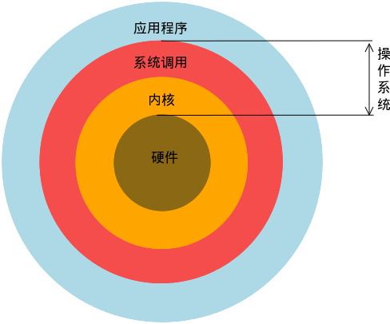

Linux系统简介
linux 为何物
Linux 就是一个操作系统，就像你多少已经了解的 Windows（xp，7，8）和 Mac OS 。至于操作系统是什么，就不用过多解释了，如果你学习过前面的入门课程，应该会有个基本概念了，这里简单介绍一下操作系统在整个计算机系统中的角色。
我们的 Linux 主要是系统调用和内核那两层。当然直观地看，我们使用的操作系统还包含一些在其上运行的应用程序，比如文本编辑器、浏览器、电子邮件等。
UNIX进化史

大致路径

shell的一些快捷键
| 按键 | 作用 |
|---|---|
Ctrl+d |
键盘输入结束或退出终端 |
Ctrl+s |
暂停当前程序，暂停后按下任意键恢复运行 |
Ctrl+z |
将当前程序放到后台运行，恢复到前台为命令fg |
Ctrl+a |
将光标移至输入行头，相当于Home键 |
Ctrl+e |
将光标移至输入行末，相当于End键 |
Ctrl+k |
删除从光标所在位置到行末 |
Alt+Backspace |
向前删除一个单词 |
Shift+PgUp |
将终端显示向上滚动 |
Shift+PgDn |
将终端显示向下滚动 |
shell常用的通配符
| 字符 | 含义 |
|---|---|
* |
匹配 0 或多个字符 |
? |
匹配任意一个字符 |
[list] |
匹配 list 中的任意单一字符 |
[^list] |
匹配 除 list 中的任意单一字符以外的字符 |
[c1-c2] |
匹配 c1-c2 中的任意单一字符 如：[0-9][a-z] |
{string1,string2,...} |
匹配 string1 或 string2 (或更多)其一字符串 |
{c1..c2} |
匹配 c1-c2 中全部字符 如{1..10} |
获得帮助(man手册)
man
通常 man 手册中的内容很多，你可能不太容易找到你想要的结果，不过幸运的是你可以在 man 中使用搜索/<你要搜索的关键字>，查找完毕后你可以使用n键切换到下一个关键字所在处，shift+n为上一个关键字所在处。使用Space（空格键）翻页，Enter（回车键）向下滚动一行，或者使用k，j（vim 编辑器的移动键）进行向前向后滚动一行。按下h键为显示使用帮助（因为 man 使用 less 作为阅读器，实为less工具的帮助），按下q退出。
想要获得更详细的帮助，你还可以使用info命令，不过通常使用man就足够了。如果你知道某个命令的作用，只是想快速查看一些它的某个具体参数的作用，那么你可以使用--help参数，大部分命令都会带有这个参数
字符画命令
安装 banner
1 | sudo apt-get update |
使用
1 | banner acbs |
w是宽度的意思,在显示屏中显示比较小,必须加上宽度限制
其他的还有toilet figlet
1 | sudo apt-get install toilet |
用户管理
1 | who am i |
输出的第一列表示打开当前伪终端的用户的用户名（要查看当前登录用户的用户名，去掉空格直接使用 whoami 即可），第二列的 pts/0 中 pts 表示伪终端，所谓伪是相对于 /dev/tty 设备而言的，还记得上一节讲终端时的那七个使用 [Ctrl]+[Alt]+[F1]～[F7] 进行切换的 /dev/tty 设备么，这是“真终端”，伪终端就是当你在图形用户界面使用 /dev/tty7 时每打开一个终端就会产生一个伪终端，pts/0 后面那个数字就表示打开的伪终端序号，你可以尝试再打开一个终端，然后在里面输入 who am i，看第二列是不是就变成 pts/1 了，第三列则表示当前伪终端的启动时间。
还有一点需要注意的是，在某些环境中 who am i 和 who mom likes 命令不会输出任何内容，这是因为当前使用的 SHELL 不是登录时的 SHELL，没有用户与 who 的 stdin 相关联，因此不会输出任何内容。例如我在本地的 Ubuntu 系统上输入这个命令就不会有提示。
此时我们只需要打开一个登录 SHELL 的终端例如 Tmux，或者通过 ssh 登录到本机，再在新的终端里执行命令即可。
who命令的其他参数
| 参数 | 说明 |
|---|---|
-a |
打印能打印的全部 |
-d |
打印死掉的进程 |
-m |
同am i，mom likes |
-q |
打印当前登录用户数及用户名 |
-u |
打印当前登录用户登录信息 |
-r |
打印运行等级 |
查看和切换用户
一般 /home下的每一个文件夹就是一个普通目录
su <user> 可以切换到用户 user，执行时需要输入目标用户的密码，
sudo <cmd> 可以以特权级别运行 cmd 命令，需要当前用户属于 sudo 组，且需要输入当前用户的密码。
su - <user> 命令也是切换用户，但是同时用户的环境变量和工作目录也会跟着改变成目标用户所对应的。退出当前用户跟退出终端一样，可以使用 exit 命令或者使用快捷键 Ctrl+D。
1 | sudo adduser lilei # 新建一个叫lilei的用户 |